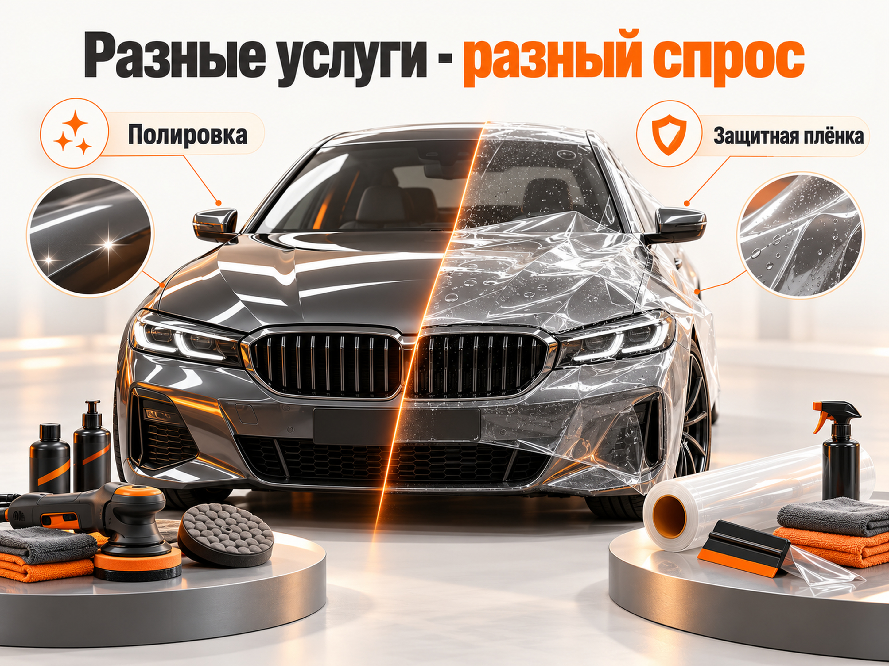
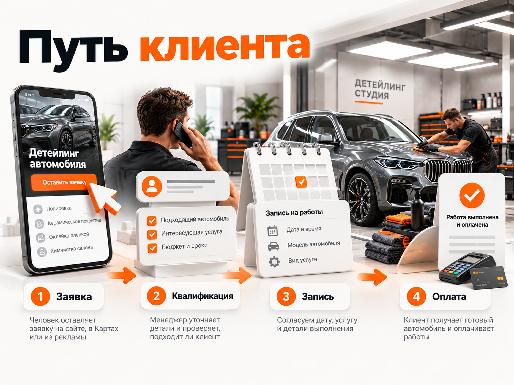

Блог о платном трафике
Продвижение детейлинг-студии: инструкция и прогноз на 2026 год
Для продвижения детейлинг-студии в 2026 году я бы использовал прежде всего Яндекс Директ, Яндекс Карты и страницы сайта под конкретные услуги. Поиск помогает привлекать людей, которые уже выбирают полировку, керамическое покрытие или оклейку автомобиля плёнкой. Карты закрывают локальный спрос, а SEO позволяет постепенно получать обращения без оплаты каждого перехода.
Для первоначального прогноза региональной студии можно рассмотреть рекламный бюджет 60 000 ₽ в месяц и расчётную стоимость обращения 1500–3000 ₽. Это даёт 20–40 обращений, но не означает столько же оплаченных заказов. По приведённой ниже модели из них получится примерно 3–6 продаж.
Главная задача рекламы детейлинга - не максимальное количество дешёвых заявок, а загрузка студии рентабельными работами.
Чем отличается продвижение детейлинга от обычного автосервиса
Автосервис часто получает обращения, когда у человека уже возникла техническая проблема с машиной. В детейлинге решение обычно менее срочное. Владелец автомобиля может несколько недель выбирать студию для дорогой оклейки, изучать материалы, фотографии работ и отзывы.
При этом разные услуги формируют совершенно разный спрос.
| Направление | Что ищет клиент | Особенность продвижения |
|---|---|---|
| Химчистка салона | Удалить загрязнения, запахи, привести салон в порядок | Важны цена, расположение, сроки |
| Полировка кузова | Убрать мелкие дефекты, восстановить блеск | Нужны фото результата и объяснение технологии |
| Керамическое покрытие | Защитить кузов и облегчить уход | Клиент сравнивает покрытия и сроки действия |
| Оклейка PPF-плёнкой | Защитить кузов от сколов и повреждений | Дорогое решение, важны материал, опыт и гарантии |
| Комплексный детейлинг | Восстановить внешний вид автомобиля | Нужно показать состав пакета и его ценность |
Я бы не объединял эти направления в одну рекламную группу или на одну универсальную посадочную страницу.
Человек, который ищет химчистку салона за разумную цену, и владелец премиального автомобиля, выбирающий полную оклейку защитной плёнкой, принимают решения по-разному. Первый чаще ориентируется на удобство и стоимость, второй значительно больше внимания уделяет качеству материалов, репутации и доказательствам профессионализма.

Это влияет на географию рекламы. За простой услугой человек обычно предпочитает ехать недалеко. Ради качественной оклейки дорогого автомобиля он может рассматривать студии в разных частях города.
Поэтому географию, предложения и рекламные бюджеты нужно определять отдельно для каждой группы услуг.
Какие каналы продвижения детейлинга использовать
Для большинства студий я бы выстроил следующую систему.
| Канал | Основная задача | Приоритет |
|---|---|---|
| Яндекс Директ, Поиск | Привлечение клиентов с готовым спросом | Высокий |
| Яндекс Карты | Локальные обращения, звонки и маршруты | Высокий |
| SEO сайта | Органический трафик по конкретным услугам | Высокий |
| РСЯ и ретаргетинг | Дополнительные касания и возврат посетителей | Тестировать |
| Авито | Дополнительные обращения по услугам | Тестировать |
| VK Реклама | Продвижение визуальных услуг и специальных предложений | По результатам теста |
При ограниченном бюджете я бы начинал с Поиска Яндекс Директа и качественно заполненной карточки в Яндекс Картах.
Не стоит одновременно запускать пять рекламных каналов, если на каждом окажется недостаточно денег для получения статистики.
Как настроить Яндекс Директ для детейлинг-студии
Поисковые кампании
Самый понятный старт - реклама конкретных услуг по коммерческим запросам.
Примеры групп поисковых фраз:
Химчистка:
- химчистка салона автомобиля;
- детейлинг химчистка салона;
- химчистка авто цена;
- химчистка автомобиля рядом.
Полировка и покрытия:
- полировка кузова автомобиля;
- восстановительная полировка авто;
- керамическое покрытие автомобиля;
- нанести керамику на машину.
Защитные плёнки:
- оклейка автомобиля полиуретановой плёнкой;
- антигравийная плёнка на авто;
- оклейка PPF цена;
- бронирование кузова автомобиля;
- защитная плёнка для BMW.
Для каждой группы нужно учитывать город, район и реальные поисковые запросы пользователей.
Отдельно стоит проверить информационные и товарные запросы. Например, человек может искать, как самостоятельно нанести керамическое покрытие, купить плёнку или приобрести оборудование для полировки. Для студии, продающей именно услуги, такая аудитория часто нецелевая.
Не рекомендую без анализа исключать все информационные формулировки. Часть людей сначала изучает технологию, а затем заказывает услугу. Но такие запросы не должны бесконтрольно расходовать основной рекламный бюджет.
Реклама по маркам автомобилей
Для студий, работающих преимущественно с дорогими автомобилями, имеет смысл тестировать отдельные объявления по маркам:
- оклейка BMW полиуретановой плёнкой;
- защита кузова Mercedes;
- оклейка Porsche PPF;
- антигравийная защита Li Auto.
Но этот подход нужен не всем.
Если студия обслуживает автомобили разных классов, искусственно ограничивать аудиторию премиальными марками не стоит. Важно показывать именно те автомобили и работы, которые соответствуют реальному позиционированию бизнеса.
РСЯ и ретаргетинг
РСЯ можно использовать для демонстрации работ и привлечения аудитории, которая интересуется уходом и защитой автомобиля, но ещё не ищет конкретную студию.
Для креативов подходят:
- процесс оклейки кузова;
- результат полировки до и после;
- крупные планы защитного покрытия;
- короткие видео из детейлинг-бокса;
- конкретное предложение с понятными условиями.
Отдельно я бы проверял ретаргетинг на посетителей страниц дорогих услуг. Покупателю полной оклейки часто нужно несколько касаний перед записью.
Однако РСЯ не стоит автоматически назначать главным источником заявок. Вначале нужно получить данные по Поиску, затем проверять, может ли дополнительный охват приносить квалифицированные обращения по приемлемой стоимости.
Выбор рекламной стратегии
Для небольшой студии особенно важно не раздробить статистику между множеством кампаний и целей.
Я бы начал с ограниченного числа направлений, понятного бюджета и корректно настроенных конверсий. Стратегию оплаты за конверсии нельзя выбирать только потому, что она выглядит удобнее оплаты за клики.
Если подтверждённых заявок мало, автоматическому обучению может не хватать данных. При этом оптимизация на простые действия вроде нажатия кнопки способна привести много формальных конверсий без реальных клиентов.
По мере накопления обращений нужно подключать данные из CRM, чтобы учитывать не только отправленные формы, но и качество лидов.
Яндекс Карты и локальное продвижение детейлинга
Яндекс Карты для детейлинг-студии являются не просто источником дополнительных переходов. Часто именно карточка организации помогает человеку принять окончательное решение.
В ней должны быть:
- актуальные услуги и цены или понятные ценовые ориентиры;
- фотографии помещения, оборудования и результатов работ;
- адрес, часы работы, телефон и сайт;
- реальные отзывы клиентов;
- возможность быстро связаться со студией;
- понятное описание специализации.
Особенно полезны фотографии законченных работ с указанием модели автомобиля и выполненной услуги.
Например, фотография Porsche после полной оклейки с указанием использованной плёнки и объёма работ сообщает потенциальному клиенту намного больше, чем обычная фотография чистого автомобиля.
Платное продвижение в Картах имеет смысл подключать после подготовки карточки, а не вместо неё.
Стоимость и подходящий рекламный формат нужно проверять для конкретной организации. Фиксированного универсального бюджета, который гарантирует поток клиентов из Карт, нет.
При анализе эффективности отдельно учитывайте звонки, построенные маршруты и фактические обращения. Маршрут до студии сам по себе ещё не означает, что клиент приехал и оплатил услугу.
Как подготовить сайт детейлинг-студии к рекламе
Главная ошибка посадочной страницы - рассказывать обо всех услугах сразу, не отвечая на вопрос посетителя.
Если человек ищет оклейку автомобиля защитной плёнкой, ему нужна информация именно об оклейке.
На странице стоит показать:
- Какие части автомобиля можно оклеить и какие варианты защиты доступны.
- Какие материалы применяются и чем они отличаются.
- Как формируется стоимость и какие есть ценовые ориентиры.
- Сколько времени занимает работа.
- Какие условия гарантии действуют.
- Фотографии реальных автомобилей.
- Как получить расчёт и записаться.
Для полировки и химчистки структура может быть похожей, но акценты будут другими.
В полировке важнее демонстрация дефектов и результата. В химчистке - проблема загрязнений, состав работ, безопасность материалов и сроки.
Для дорогих услуг особенно полезна форма предварительного расчёта, в которой можно указать марку, модель автомобиля и интересующую услугу.
При этом не стоит требовать слишком много информации до первого контакта. Достаточно данных, которые действительно помогают оценить заказ.
Отдельные страницы под оклейку, керамику, полировку и химчистку полезны не только для рекламы, но и для SEO. Они позволяют закрывать самостоятельные коммерческие запросы без попытки продвигать весь детейлинг одним общим текстом.
Что показывают реальные кейсы продвижения детейлинга
Единой достоверной средней стоимости заявки для российского детейлинга нет. Опубликованные результаты сильно различаются по услугам, регионам и методике подсчёта.
Рассмотрим несколько кейсов 2025–2026 годов.
| Кейс и период | Результат | Что важно учитывать |
|---|---|---|
| РекламаМама, Москва, опубликовано в феврале 2026 | Около 90 обращений за первый месяц при расходе около 200 000 ₽, CPL примерно 2300 ₽ | Премиальный детейлинг, дорогие услуги |
| Lead Hunt, Москва, февраль 2026 | 211 лидов по 2371 ₽ | Основной продукт - защитная оклейка премиальных автомобилей |
| Байкал Таргет, Иркутск, кейс опубликован в марте 2026 | 129 заявок по 888 ₽ | VK Ads, предложение комплексного детейлинга за 35 000 ₽ |
| AviGrowth, март-апрель 2026 | 55 обращений по 642 ₽ при расходе 35 293 ₽ | Авито, учитываются контакты, а не продажи |
| IVIK, Москва, сентябрь-ноябрь 2025 | 85 лидов по 5357 ₽, 7 продаж | Рекламные расходы превысили выручку, зафиксированную за период |
Это данные отдельных опубликованных агентских проектов, а не независимое исследование рынка. Они показывают возможные результаты при конкретных условиях, но не гарантируют аналогичный CPL другой студии.
Особенно интересен кейс Lead Hunt по премиальной оклейке автомобилей. На первом этапе объявления получали обращения от владельцев неподходящих автомобилей. После переработки предложений, посадочной страницы и квалификации заявок рекламодатели стали точнее выделять нужную аудиторию. Для этого также использовали передачу статусов из CRM.
В кейсе РекламаМама существенное улучшение произошло после пересборки сайта. Авторы сообщают о росте конверсии с 2% до 7% при сохранении стоимости обращения в диапазоне 2–3 тыс. ₽.
Но есть и противоположный пример.
В проекте Styled Studio агентство IVIK за сентябрь-ноябрь 2025 года потратило на Яндекс Директ 455 315 ₽, получило 85 лидов и 7 продаж. Зафиксированная выручка составила 392 400 ₽.
То есть рекламные расходы оказались выше выручки на 62 915 ₽ ещё до учёта себестоимости работ и других расходов. При этом часть заказов могла иметь продолжение за пределами периода, поэтому считать это окончательным финансовым результатом студии нельзя.
Вывод из кейсов: низкий CPL не означает хорошую экономику, а высокий CPL не всегда означает плохую рекламу. Оценивать нужно стоимость оплаченной работы и деньги, остающиеся после её выполнения.
Прогноз бюджета и заявок на детейлинг в 2026 году
Для первого расчёта возьмём региональную детейлинг-студию, которая продвигает полировку, керамику и комплексные услуги через Яндекс Директ.
Рассмотрим рекламный бюджет 60 000 ₽ в месяц.
В качестве расчётного рабочего диапазона возьмём CPL 1500–3000 ₽. Это не установленная рыночная норма, а допущение для первоначального медиаплана с учётом разброса свежих кейсов.
| Показатель | Осторожный вариант | Более сильный вариант |
|---|---|---|
| Рекламный бюджет | 60 000 ₽ | 60 000 ₽ |
| Стоимость обращения | 3000 ₽ | 1500 ₽ |
| Обращения | 20 | 40 |
| Доля квалифицированных лидов | 60% | 60% |
| Квалифицированные лиды | 12 | 24 |
| Конверсия квалифицированного лида в продажу | 25% | 25% |
| Оплаченные работы | 3 | 6 |
| Стоимость привлечения заказа | 20 000 ₽ | 10 000 ₽ |
Доли квалифицированных лидов и продаж в таблице являются предположениями для расчёта, а не опубликованной статистикой рынка.
При выбранных условиях 60 000 ₽ рекламного бюджета могут дать примерно 20–40 обращений и 3–6 оплаченных заказов.
В реальной кампании результат может выйти за этот диапазон. Он зависит от региона, услуг, предложения, конкуренции, качества обработки заявок и загрузки студии.
Для премиальной оклейки автомобилей такой расчёт нужно составлять отдельно. Смешивать её с химчисткой или недорогой полировкой в одном прогнозе неправильно.
Как рассчитать окупаемость рекламы детейлинга
Стоимость заявки нужно оценивать через деньги, которые студия зарабатывает на выполненной работе.
Предположим, что средний чек услуги составляет 35 000 ₽, а переменные затраты на материалы, оплату работ и другие расходы, непосредственно связанные с заказом, составляют 15 000 ₽.
Тогда вклад одного заказа в покрытие рекламы и постоянных расходов:
35 000 − 15 000 = 20 000 ₽.
Вернёмся к прогнозу с бюджетом 60 000 ₽.
При трёх продажах суммарный вклад составит 60 000 ₽. После оплаты рекламы останется 0 ₽.
При шести продажах суммарный вклад составит 120 000 ₽. После оплаты рекламы останется 60 000 ₽.
И это ещё до оплаты ведения рекламы, аренды, постоянных зарплат и других фиксированных расходов.
Все значения здесь условные. Это пример методики, а не реальные финансовые показатели детейлинг-студии.
Сколько можно платить за одну заявку
Допустим, студия готова тратить на привлечение нового клиента не более половины вклада одного заказа.
При вкладе 20 000 ₽ допустимая рекламная стоимость оплаченного заказа составит:
20 000 × 50% = 10 000 ₽.
Теперь предположим, что 60% обращений квалифицированные, а 25% из них превращаются в продажу.
Итоговая конверсия обычной заявки в оплату:
60% × 25% = 15%.
Предельный CPL по выбранной модели:
10 000 × 15% = 1500 ₽.
Получается, что заявка по 3000 ₽ может выглядеть вполне нормальной относительно некоторых опубликованных кейсов, но при такой экономике конкретной студии окажется слишком дорогой.
Именно поэтому я бы не ориентировался на универсальные обещания вроде «приведём клиентов на детейлинг по 500 ₽».
Правильный вопрос для владельца бизнеса - сколько он может потратить на привлечение клиента с учётом маржи конкретной услуги.
Повторные обращения и дополнительные продажи могут улучшать экономику, но включать их в прогноз стоит только при наличии подтверждённых данных.
Что ещё использовать для привлечения клиентов
SEO-продвижение сайта
Для поискового продвижения я бы сделал отдельные страницы под основные коммерческие услуги, а не одну большую страницу обо всём детейлинге.
Например:
- оклейка автомобиля PPF-плёнкой;
- керамическое покрытие кузова;
- полировка автомобиля;
- детейлинг-химчистка;
- комплексный детейлинг.
На каждой странице нужны реальные работы, цена или понятный порядок расчёта, условия и ответы на вопросы клиента.
Дополнительно полезны материалы, помогающие сравнивать услуги. Например, чем PPF отличается от керамического покрытия, в каких случаях нужна восстановительная полировка, как выбирать защитную плёнку.
Такие публикации закрывают информационный спрос и могут помогать приводить человека к коммерческой услуге.
Авито
Авито я бы использовал как дополнительный источник обращений.
В опубликованном кейсе AviGrowth за март-апрель 2026 года после расширения структуры объявлений с 21 до 43 число контактов выросло с 18 до 55 при снижении стоимости контакта с 2159 до 642 ₽.
Но контакт на Авито может означать просмотр телефона или сообщение, после которого человек не записался.
Поэтому площадку нужно оценивать по фактическим записям и выполненным заказам, а не только по внутренним показателям кабинета.
VK Реклама и видеоконтент
Детейлинг хорошо подходит для визуального контента, потому что результат работы можно показать непосредственно на автомобиле.
В опубликованном кейсе Байкал Таргет по студии в Иркутске получили 129 обращений по 888 ₽. Основой продвижения стало предложение комплексного детейлинга, видео работ и коммуникация через сообщения.
Это пример того, как конкретный продукт и демонстрация результата могут работать лучше общей рекламы студии.
Однако повторять чужой низкий CPL без учёта региона, цены услуги и аудитории не стоит.
Какие показатели отслеживать
Для нормальной оценки рекламы нужна воронка, которая заканчивается оплаченной работой.
Я бы отслеживал следующие показатели:
- Расход и переходы. Сколько потрачено и сколько посетителей пришло из рекламы.
- Первичные обращения. Звонки, формы, сообщения и запросы расчёта.
- Квалифицированные лиды. Подходящие автомобили, нужная услуга и потенциально приемлемый бюджет клиента.
- Записи. Клиенты, согласовавшие посещение студии.
- Фактические приезды. Люди, которые действительно приехали на осмотр или выполнение работы.
- Оплаченные заказы. Количество продаж, выручка и вклад в покрытие расходов.

Особенно важно фиксировать причины отказов.
Например, клиент хотел полную оклейку, но цена оказалась значительно выше ожиданий. Или он оставил заявку, но менеджер не смог дозвониться. Или подходящий заказ не удалось принять из-за занятых боксов.
Это три совершенно разные проблемы, и исправлять их только изменением рекламы неправильно.
Данные о квалифицированных лидах, записях и оплатах желательно передавать из CRM в Яндекс Метрику. Такая возможность предусмотрена инструментами офлайн-конверсий Яндекса.
При этом на небольшом объёме продаж не стоит механически переводить все рекламные кампании на одну редкую цель. Нужно учитывать достаточность данных для обучения стратегии.
Подробнее о механике можно прочитать в статье «Офлайн-конверсии в Яндекс Директе».
План продвижения детейлинг-студии на первый месяц
Первая неделя. Определить основные услуги, средний чек и вклад каждой работы после переменных затрат. Выбрать направления, где студия действительно хочет увеличить загрузку. Проверить сайт, карточку в Картах, формы, звонки и аналитику.
Вторая неделя. Собрать коммерческие поисковые запросы, подготовить объявления и посадочные страницы. Запустить Поиск с ограниченным числом направлений. Убедиться, что заявки доходят до менеджеров и корректно фиксируются.
Третья неделя. Анализировать поисковые запросы, стоимость обращений и их качество. Убирать очевидно нецелевой расход, проверять причины отказов, корректировать объявления и предложения.
Четвёртая неделя. Сопоставить расходы с квалифицированными лидами, записями и оплаченными работами. Оценить, какие услуги стоит масштабировать, а какие требуют изменений.
Не стоит требовать от небольшого рекламного теста статистически точного прогноза на год.
Его главная задача - определить реальную стоимость привлечения клиента, проверить спрос и обнаружить ограничения воронки.
Основные ошибки при рекламе детейлинга
Самая дорогая ошибка - оптимизировать рекламу исключительно по количеству заявок.
Можно привести десятки обращений на недорогую химчистку и при этом оставить свободными боксы, предназначенные для более прибыльной оклейки автомобилей.
Вторая ошибка - использовать одинаковое предложение для разных услуг. Полировка, керамика и PPF решают разные задачи и требуют отдельных аргументов.
Третья ошибка - скрывать стоимость дорогих работ. Для премиального сегмента предварительная цена или диапазон часто помогает отсечь неподходящие обращения и сэкономить время менеджера.
Четвёртая ошибка - считать любую конверсию Яндекс Метрики продажей. Клик по телефону, отправленная форма и оплаченная работа должны учитываться отдельно.
Пятая ошибка - увеличивать рекламный бюджет без оценки свободных мощностей. Если мастера и боксы уже полностью загружены, привлечение дополнительных обращений может ухудшить сервис и экономику.
Итог: как привлекать клиентов в детейлинг в 2026 году
Для большинства детейлинг-студий я бы выбрал связку Яндекс Директ, Яндекс Карты и отдельные страницы сайта под основные услуги.
Поиск позволяет управлять спросом на конкретные работы. Карты помогают привлекать локальных клиентов и усиливают доверие. SEO постепенно расширяет присутствие в поисковой выдаче. Авито и VK Реклама могут дополнять эту систему, если подтверждают эффективность реальными заказами.
При расчётном рекламном бюджете 60 000 ₽ в месяц можно начать с прогноза 20–40 обращений при CPL 1500–3000 ₽. Но это не гарантия и не средняя статистика рынка. До запуска обязательно нужно посчитать допустимую стоимость клиента для конкретной студии.
Главный показатель успешного продвижения детейлинга - стоимость нового оплаченного заказа и его вклад в прибыль, а не минимальная цена заявки.
Если нужна настройка и ведение Яндекс Директа для детейлинг-студии, я занимаюсь рекламой, аналитикой и оптимизацией заявок. Работаю с проектами на договорной основе, стоимость услуг от 30 000 ₽ в месяц.